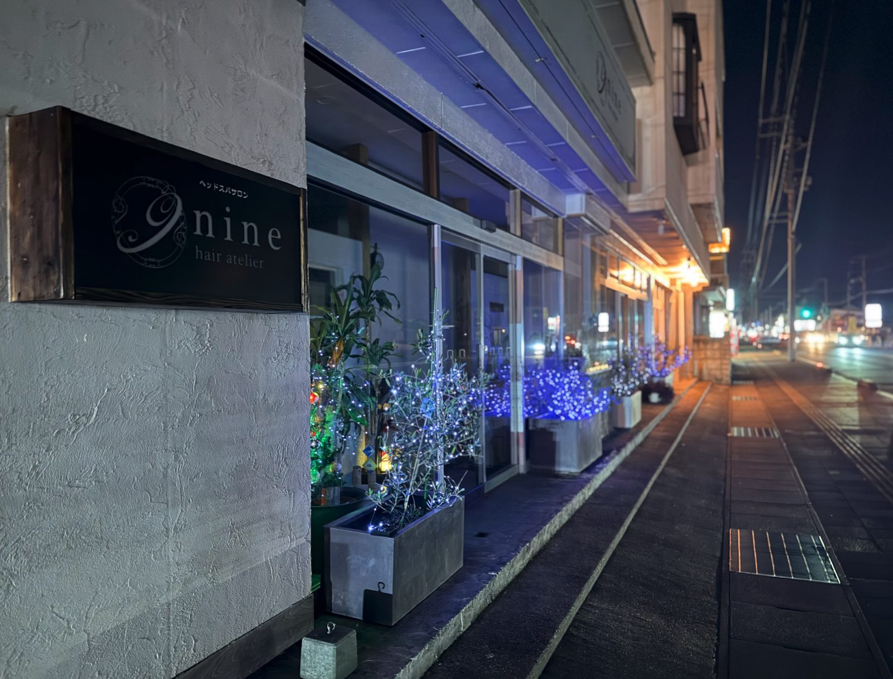

【2025年もありがとうございました！10周年イヤーの締めくくりに】🎄✨
こんにちは。アトリエ・ナインの菅野です。
12月。
いよいよ今年も残すところあとわずかとなりましたね。

今年は私たちアトリエ・ナインにとっても特別な1年でした。
◼︎9月、サロンは10周年を迎えました🎉
2015年に福島市森合で1店舗目をオープンし、
たくさんの出会いと支えをいただきながら、
ついに10周年を迎えることができました。
オープン当初から通ってくださるお客さま、
日々支えてくれるスタッフたち、
そしてご家族や関係者の皆さまへ、
心より感謝申し上げます🙇♂️
◼︎11月、アイラッシュサロン【n plus】が独立オープン👁🗨
これまで森合店に併設されていたアイラッシュ部門が、
11月より独立店舗「n plus」としてスタートしました！
アイリスト専用の空間で、
まつげ・眉毛のデザインに集中できる環境が整い、
より丁寧に、より自由に、
お客様の「目元の理想」を形にできる場所になっています✨
◼︎採用について｜来年に向けて「新しい出会い」を
今年は、たくさんのご応募・見学・お問い合わせをいただき、
そのたびに「人と出会う面白さ」と「ご縁のありがたさ」を感じました。
現在は下記のような募集をしています👇
【募集中】
📍森合店：アシスタント または 時短勤務スタイリスト（いずれか1名）
→月〜土勤務（時短OK）／週休2日制／ブランクありも歓迎！
【※その他のポジションは現在募集していません】
2026年以降の事業展開も見据え、
必要に応じてまた募集を再開する予定ではありますが、
年内の採用はこの1枠がラストです。
気になる方は、LINEからお気軽にお問い合わせください📲
サロン見学・体験も受け付けています◎
◼︎2026年は、“次の10年”への第一歩
10周年を迎え、改めて思うのは、
「経営にゴールはない」ということ。
組織が大きくなる分、
やることも、考えることも増えていくけど、
それでも「スタッフが安心して働ける環境」
「お客さまが通い続けたいと思えるサロン」
この2つを大切にして、来年も進んでいきたいと思います。
今年も1年、本当にありがとうございました！
年末年始は少し混み合いますが、
年内に髪やまつ毛を整えて、
気持ちよく新年を迎えられるよう、スタッフ一同準備してお待ちしています🌿
寒さも増してきますので、皆さまどうかご自愛ください。
それではまた。
株式会社 アトリエ・ナイン
代表 菅野 勇紀
📸 Instagram ：@atelier_nine.kanno
🧵 Threads ：@atelier_nine.kanno
2015年9月、福島県福島市に《hair atelier nine》をオープン。
福島県福島市で【ヘッドスパサロン】2店舗、【eyelash salon】1店舗（n plus）を展開中。
完全週休2日／残業なし／サロンワーク6〜8時間。
女性が安心して働ける環境づくりをこれからも進めていきます。